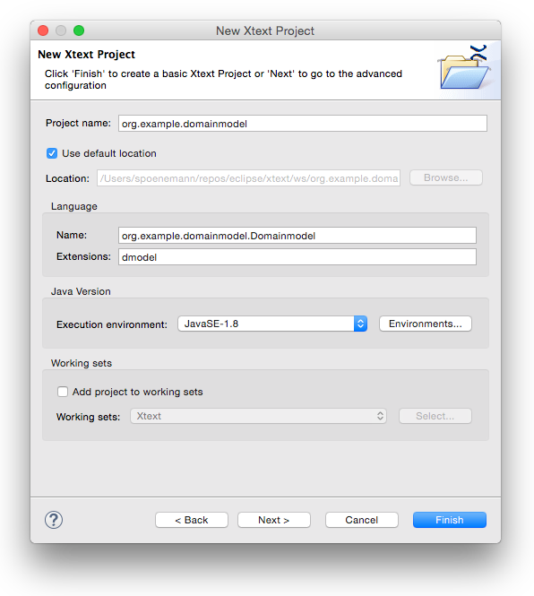
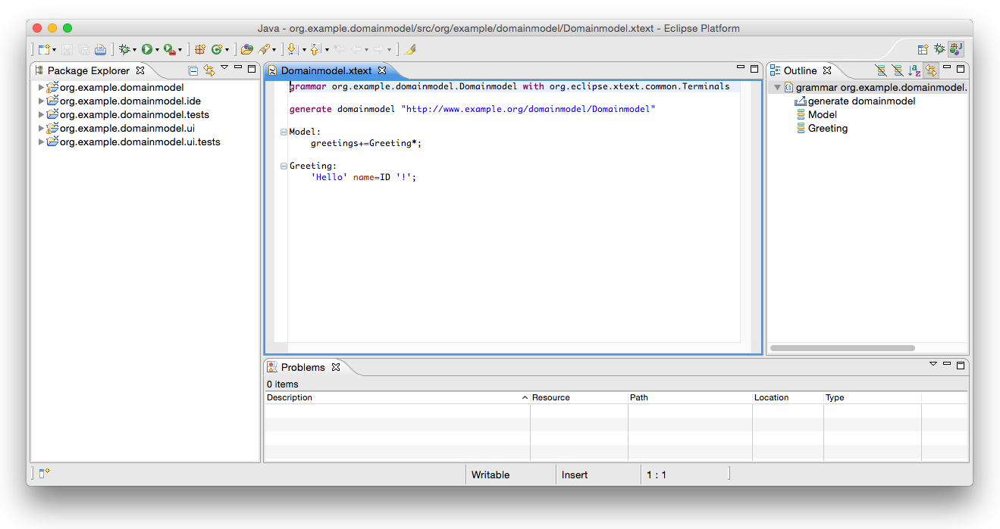
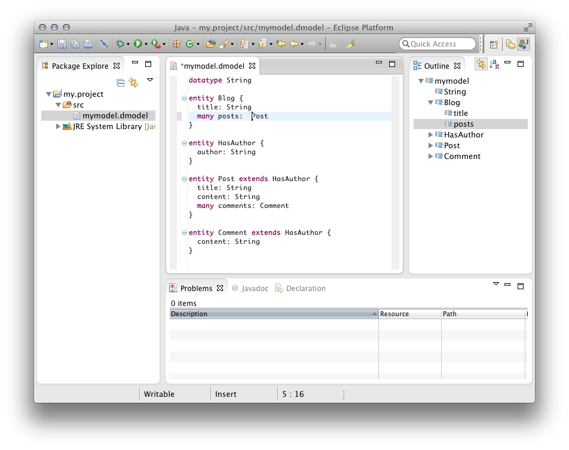
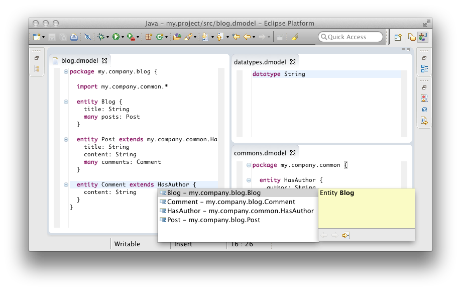

15 Minutes Tutorial
In this tutorial we will implement a small domain-specific language to model entities and properties similar to what you may know from Rails, Grails or Spring Roo. The syntax is very suggestive:
datatype String
entity Blog {
title: String
many posts: Post
}
entity HasAuthor {
author: String
}
entity Post extends HasAuthor {
title: String
content: String
many comments: Comment
}
entity Comment extends HasAuthor {
content: String
}
After you have installed Xtext on your machine, start Eclipse and set up a fresh workspace.
Create A New Xtext Project
In order to get started we first need to create some Eclipse projects. Use the Eclipse wizard to do so:
File → New → Project… → Xtext → Xtext project
Choose a meaningful project name, language name and file extension, e.g.
| Project name: | org.example.domainmodel |
| Language name: | org.example.domainmodel.Domainmodel |
| DSL-File extensions: | dmodel |
Click on Finish to create the projects.

After you have successfully finished the wizard, you will find five new projects in your workspace.
| org.example.domainmodel | The grammar definition and all language-specific components (parser, lexer, linker, validation, etc.) |
| org.example.domainmodel.ide | Platform-independent IDE functionality (e.g. services for content assist) |
| org.example.domainmodel.tests | Unit tests for the language |
| org.example.domainmodel.ui | The Eclipse editor and other workbench related functionality |
| org.example.domainmodel.ui.tests | UI tests for the Eclipse editor |

Write The Grammar
The wizard will automatically open the grammar file Domainmodel.xtext in the editor. As you can see it already contains a simple Hello World grammar:
grammar org.example.domainmodel.Domainmodel with
org.eclipse.xtext.common.Terminals
generate domainmodel "http://www.example.org/domainmodel/Domainmodel"
Model:
greetings+=Greeting*;
Greeting:
'Hello' name=ID '!';
Let’s now just replace that grammar definition with the one for our entities language:
grammar org.example.domainmodel.Domainmodel with
org.eclipse.xtext.common.Terminals
generate domainmodel "http://www.example.org/domainmodel/Domainmodel"
Domainmodel:
(elements+=Type)*;
Type:
DataType | Entity;
DataType:
'datatype' name=ID;
Entity:
'entity' name=ID ('extends' superType=[Entity])? '{'
(features+=Feature)*
'}';
Feature:
(many?='many')? name=ID ':' type=[Type];
Let’s have a more detailed look at what the different grammar rules mean:
-
The first rule in a grammar is always used as the start rule.
Domainmodel: (elements+=Type)*;It says that a Domainmodel contains an arbitrary number (
*) of Types which are added (+=) to a feature calledelements. -
The rule Type delegates to either the rule DataType or (
|) the rule Entity.Type: DataType | Entity; -
The rule DataType starts with a keyword
'datatype', followed by an identifier which is parsed by a rule called ID. The rule ID is defined in the super grammar org.eclipse.xtext.common.Terminals and parses a single word, a.k.a identifier. You can navigate to the declaration by using F3 on the rule call. The value returned by the call to ID is assigned (=) to the featurename.DataType: 'datatype' name=ID; -
The rule Entity again starts with the definition of a keyword followed by a name.
Entity : 'entity' name=ID ('extends' superType=[Entity])? '{' (features+=Feature)* '}';Next up there is the
extendsclause which is parenthesized and optional (?). Since the feature namedsuperTypeis a cross reference (note the square brackets), the parser rule Entity is not called here, but only a single identifier (the ID-rule) is parsed. The actual Entity to assign to thesuperTypereference is resolved during the linking phase. Finally between curly braces there can be any number of Features, which invokes the next rule. -
Last but not least, the rule Feature is defined as follows:
Feature: (many?='many')? name=ID ':' type=[Type];The keyword
manyshall be used to model a multi-valued feature in this DSL. The assignment operator (?=) implies that the featuremanyis of type boolean. You are already familiar with the other syntax elements in this parser rule.
This entities grammar already uses the most important concepts of Xtext’s grammar language. You have learned that keywords are written as string literals and a simple assignment uses a plain equal sign (=), whereas a multi-value assignment uses a plus-equals (+=). We have also seen the boolean assignment operator (?=). Furthermore the example contains syntax elements with different cardinalities (? = optional, * = any number, + = at least once) and demonstrates how cross-references can be declared. Please consult the Grammar Language Reference for more details. Let’s now have a look what you can do with such a language description.
Generate Language Artifacts
Now that we have the grammar in place we need to execute the code generator that will derive the various language components. To do so, right-click into the grammar editor and select
Run As → Generate Xtext Artifacts.
This action generates the parser and text editor and some additional infrastructure code. You will see its logging messages in the Console View.

Run the Generated Eclipse Plug-in
We are now able to test the Eclipse IDE integration. If you right-click the project org.example.domainmodel in the Package Explorer and select Run As → Eclipse Application, a new run configuration is created and launched that starts a second instance of Eclipse including your new language plug-ins. In the new instance, create a new project of your choice, e.g. File → New → Project… → Java Project and therein a new file with the file extension you chose in the beginning (*.dmodel). This will open the generated entity editor. Try it and discover the default functionality for code completion, syntax highlighting, syntactic validation, linking errors, formatting, (quick) outline view, hyperlinking, find references, folding, rename refactoring etc.

Second Iteration: Adding Packages and Imports
After you have created your first DSL and had a look at the editor, the language should be refined and incrementally enhanced. The domainmodel language should support the notion of Packages in order to avoid name clashes and to better fit with the target environment Java. A Package may contain Types and other packages. In order to allow for names in references, we will also add a way to declare imports.
In the end we want to be able to split the previously used model into distinct files:
// datatypes.dmodel
datatype String
// commons.dmodel
package my.company.common {
entity HasAuthor {
author: String
}
}
// blogs.dmodel
package my.company.blog {
import my.company.common.*
entity Blog {
title: String
many posts: Post
}
entity Post extends my.company.common.HasAuthor {
title: String
content: String
many comments: Comment
}
entity Comment extends HasAuthor {
content: String
}
}
Let’s start enhancing the grammar.
-
Since a Domainmodel no longer contains types but also packages, the entry rule has to be modified. Furthermore, a common super type for PackageDeclarations and Types should be introduced: the AbstractElement.
Domainmodel: (elements+=AbstractElement)*; AbstractElement: PackageDeclaration | Type; -
A
PackageDeclarationin turn looks pretty much as expected. It contains a number of Imports and AbstractElements. Since Imports should be allowed for the root-Domainmodel, too, we add them as an alternative to the ruleAbstractElement.PackageDeclaration: 'package' name=QualifiedName '{' (elements+=AbstractElement)* '}'; AbstractElement: PackageDeclaration | Type | Import; QualifiedName: ID ('.' ID)*;The
QualifiedNameis a little special. It does not contain any assignments. Therefore it serves as a data type rule that returns a String. Hence the featurenameof a Package is still of type String. -
Imports can be defined in a very convenient way with Xtext. If you use the name
importedNamespacein a parser rule, the framework will treat the value as an import. It even supports wildcards and handles them as expected:Import: 'import' importedNamespace=QualifiedNameWithWildcard; QualifiedNameWithWildcard: QualifiedName '.*'?;Similar to the rule
QualifiedName,QualifiedNameWithWildcardreturns a plain string. -
The last step is to allow fully qualified names in cross-references, too. Otherwise one could not refer to an entity without adding an import statement.
Entity: 'entity' name=ID ('extends' superType=[Entity|QualifiedName])? '{' (features+=Feature)* '}'; Feature: (many?='many')? name=ID ':' type=[Type|QualifiedName];Please note that the bar (
|) is not an alternative in the context of a cross-reference, but used to specify the syntax of the parsed string.
That’s all for the grammar. It should now read as
grammar org.example.domainmodel.Domainmodel with
org.eclipse.xtext.common.Terminals
generate domainmodel "http://www.example.org/domainmodel/Domainmodel"
Domainmodel:
(elements+=AbstractElement)*;
PackageDeclaration:
'package' name=QualifiedName '{'
(elements+=AbstractElement)*
'}';
AbstractElement:
PackageDeclaration | Type | Import;
QualifiedName:
ID ('.' ID)*;
Import:
'import' importedNamespace=QualifiedNameWithWildcard;
QualifiedNameWithWildcard:
QualifiedName '.*'?;
Type:
DataType | Entity;
DataType:
'datatype' name=ID;
Entity:
'entity' name=ID ('extends' superType=[Entity|QualifiedName])? '{'
(features+=Feature)*
'}';
Feature:
(many?='many')? name=ID ':' type=[Type|QualifiedName];
You should regenerate the language infrastructure as described in the previous section, and give the editor another try. You can even split up your model into smaller parts and have cross-references across file boundaries.
